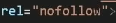

trabalhando com links internos
code:
P1

P2

- rel="next"
- informa ao navegador que é a proxima pagina
- rel="prev"
- informa que é a pagina anterior
OBSs:
- 
- quando se ussa o nofollow vc esta disendo q para ao navegador q a pagina q vira nao pertence a vc etc..

- se no target vc ustilisr o "_self" a pagina abrira na mesma aba